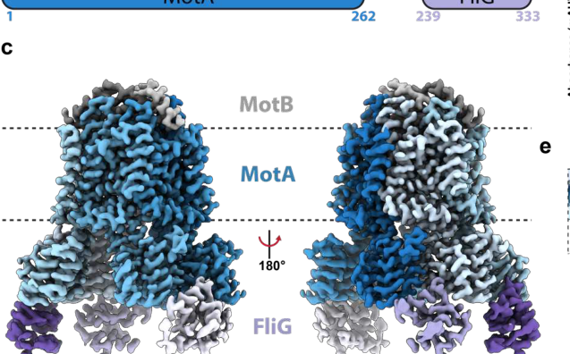

motA encodes the A subunit of the MotAB flagellar stator in P. putida KT2440. MotA is an inner-membrane component of the proton-coupled stator module that converts proton motive force into torque for bacterial-type flagellum-dependent motility.
| GO Term | Evidence | Action | Reason |
|---|---|---|---|
|
GO:0005886
plasma membrane
|
IEA
GO_REF:0000120 |
ACCEPT |
Summary: This location annotation is appropriate. MotA is an inner-membrane stator component of the flagellar motor.
Reason: Retain plasma membrane as the GO cellular-component location, while the stator complex is captured in the synthesized core function.
Supporting Evidence:
file:PSEPK/motA/motA-uniprot.txt
SUBCELLULAR LOCATION: Cell inner membrane
file:PSEPK/motA/motA-uniprot.txt
Belongs to the MotA family.
file:PSEPK/motA/motA-goa.tsv
GO:0005886 plasma membrane
file:PSEPK/motA/motA-deep-research-falcon.md
MotA is an **inner-membrane** protein with **multiple transmembrane helices** and large **cytoplasmic helices/domains** that contact the rotor
|
|
GO:0006935
chemotaxis
|
IEA
GO_REF:0000002 |
MARK AS OVER ANNOTATED |
Summary: Chemotaxis is too broad and mechanistically indirect for MotA. MotA powers flagellar motor rotation, which can support taxis behavior, but it is not a chemotaxis signaling protein. Falcon deep research is explicit that directional switching (and hence chemotactic responses) is not executed by MotA itself but by chemotaxis signaling proteins; MotA only supplies torque at the rotor-stator interface.
Reason: Prefer bacterial-type flagellum-dependent cell motility and proton transmembrane transport for the direct stator role. The chemotaxis IEA derives from the UniProt Chemotaxis keyword, but MotA is a torque generator, not a chemoreceptor or signaling component.
Supporting Evidence:
file:PSEPK/motA/motA-uniprot.txt
Flagellar motor rotation protein
file:PSEPK/motA/motA-goa.tsv
GO:0006935 chemotaxis
file:PSEPK/motA/motA-deep-research-falcon.md
Direction switching is not executed by MotA itself but by chemotaxis signaling that reorients the rotor interface MotA engages
|
|
GO:0071978
bacterial-type flagellum-dependent swarming motility
|
IEA
GO_REF:0000120 |
MARK AS OVER ANNOTATED |
Summary: Swarming motility is likely over-annotated for MotA. MotA is a core stator component for flagellum-dependent motility, but swarming is a specialized surface-associated behavior with additional determinants. Falcon deep research frames MotA's primary role as stator-dependent torque generation powering flagellar rotation (swimming motility), not the swarming-specific surface behavior.
Reason: Use the broader and more direct GO:0071973 bacterial-type flagellum-dependent cell motility rather than the swarming-specific term.
Supporting Evidence:
file:PSEPK/motA/motA-uniprot.txt
Flagellar motor rotation protein
file:PSEPK/motA/motA-goa.tsv
GO:0071978 bacterial-type flagellum-dependent swarming motility
file:PSEPK/motA/motA-deep-research-falcon.md
MotA is required for **stator-dependent torque generation** that powers **flagellar rotation** (swimming motility).
|
|
GO:0071973
bacterial-type flagellum-dependent cell motility
|
IC
PMID:35572622 The Periplasmic Domain of the Ion-Conducting Stator of Bacte... |
NEW |
Summary: MotA should be annotated to bacterial-type flagellum-dependent cell motility as the direct process for a flagellar stator A subunit.
Reason: The MotAB stator powers rotation of the flagellum; cell motility is the direct process, whereas swarming is too specific without gene-specific support.
Supporting Evidence:
file:PSEPK/motA/motA-uniprot.txt
Flagellar motor rotation protein
PMID:35572622
movement of the stator that is coupled to ion influx through the ion channel of the stator generates the rotational force
PMID:18310339
couples proton flow with torque generation
file:PSEPK/motA/motA-deep-research-falcon.md
MotA is required for **stator-dependent torque generation** that powers **flagellar rotation** (swimming motility).
file:PSEPK/motA/motA-deep-research-falcon.md
an ion-driven torque-generating complex that powers flagellar rotation rather than flagellar assembly itself
|
|
GO:1902600
proton transmembrane transport
|
IEA
file:PSEPK/motA/motA-uniprot.txt |
NEW |
Summary: This process should be added because MotA is part of the proton-coupled MotAB stator and UniProt cross-references proton transmembrane transport for this protein.
Reason: Proton translocation through the stator is the energetic process coupled to flagellar torque generation. IEA is retained here because UniProt carries this DR GO line and the fetched GOA table omitted it; a production export can normalize the evidence source if needed.
Supporting Evidence:
file:PSEPK/motA/motA-uniprot.txt
DR GO; GO:1902600; P:proton transmembrane transport
PMID:18310339
The stator complex functions as a proton channel
file:PSEPK/motA/motA-deep-research-falcon.md
MotA (A subunit) and MotB (B subunit) form the canonical **H+-driven stator**, MotAB.
|
|
GO:0015078
proton transmembrane transporter activity
|
IC
PMID:18310339 Characterization of the periplasmic domain of MotB and impli... |
NEW |
Summary: MotA contributes to proton transmembrane transporter activity as part of the assembled MotAB stator rather than acting as an independent transporter by itself.
Reason: The contributes_to qualifier captures the complex-level proton-channel activity of the MotAB stator.
Supporting Evidence:
PMID:18310339
The stator complex functions as a proton channel and couples proton flow with torque generation
PMID:35572622
the stator units, which are an energy-converting membrane protein complex
file:PSEPK/motA/motA-deep-research-falcon.md
MotA (A subunit) and MotB (B subunit) form the canonical **H+-driven stator**, MotAB.
|
|
GO:0120101
bacterial-type flagellum stator complex
|
IC
PMID:18310339 Characterization of the periplasmic domain of MotB and impli... |
NEW |
Summary: MotA should be placed in the bacterial-type flagellum stator complex because it is the A subunit of the membrane-embedded MotAB stator.
Reason: The complex term captures the functional location of MotA more specifically than plasma membrane alone.
Supporting Evidence:
PMID:18310339
MotA and MotB are integral membrane proteins that form the stator complex
PMID:35572622
The stator is composed of two membrane proteins: MotA and MotB
file:PSEPK/motA/motA-deep-research-falcon.md
MotA forms the **A-subunit ring** of the stator complex and provides the **cytoplasmic interface to the rotor** (FliG) that converts ion-driven conformational changes into rotor torque.
|
Q: Under which growth or viscosity conditions does KT2440 preferentially use the MotAB stator containing MotA rather than alternative stator systems?
Experiment: Construct motA, motB, and alternative-stator mutants with chromosomal complementation, then quantify swimming, torque proxies, and stator localization across viscosity and ion-motive-force perturbations.
Hypothesis: MotA is required for proton-driven MotAB stator function and contributes to swimming under a subset of motility conditions.
Type: targeted genetics and motor physiology
The research report should be a detailed narrative explaining the function, biological processes, and localization of the gene product. Citations should be given for all claims.
You should prioritize authoritative reviews and primary scientific literature when conducting research. You can supplement
this with annotations you find in gene/protein databases, but these can be outdated or inaccurate.
We are specifically interested in the primary function of the gene - for enzymes, what reaction is catalyzed, and what is the substrate specificity? For transporters, what is the substrate? For structural proteins or adapters, what is the broader structural role? For signaling molecules, what is the role in the pathway.
We are interested in where in or outside the cell the gene product carries out its function.
We are also interested in the signaling or biochemical pathways in which the gene functions. We are less interested in broad pleiotropic effects, except where these elucidate the precise role.
Include evidence where possible. We are interested in both experimental evidence as well as inference from structure, evolution, or bioinformatic analysis. Precise studies should be prioritized over high-throughput, where available.
The target protein is MotA, the A-subunit of the MotAB flagellar stator in Pseudomonas putida KT2440 (UniProt Q88DC2, ordered locus PP_4905). Literature that explicitly maps PP4905 → motA and labels it as a stator gene confirms that this report addresses the correct gene/protein identity. (martinez‐garcia2014themetaboliccost pages 4-7, martinez‐garcia2014themetaboliccost pages 1-4)
MotA is a cytoplasmic (inner) membrane multipass protein that oligomerizes (currently best-supported as a MotA pentamer in the active stator) and partners with MotB (dimer) to form an ion-driven torque generator that powers rotation of the polar flagellum. In current mechanistic models (largely developed in other bacteria but broadly conserved), ion flow (H+ for MotAB systems) is coupled to conformational changes/rotation within the stator, and MotA’s cytoplasmic domains transmit torque to the rotor via direct contact with FliG. (nakamura2024structureanddynamics pages 10-12, nakamura2024structureanddynamics pages 12-14, johnson2024structuralbasisof pages 1-5)
Gene symbol and locus mapping (KT2440): A genomic/functional study of P. putida KT2440 explicitly reports “two extra copies of the stator genes motA (PP4905) and motB (PP4904),” distinguishing these stator genes from the large primary flagellar gene region (PP4329–PP4397). (martinez‐garcia2014themetaboliccost pages 1-4)
Operon/genomic context in Pseudomonas: A detailed transcriptional organization study across Pseudomonas notes that motA and motB are adjacent (motAB) and (by RNA-seq continuity) co-transcribed as a bicistronic operon in P. putida KT2440. It also emphasizes that motAB is atypically located outside the canonical flagellar cluster in many Pseudomonas genomes. (leal‐morales2022transcriptionalorganizationand pages 4-5, leal‐morales2022transcriptionalorganizationand pages 4-4)
Conclusion: These two independent sources verify that the symbol motA in KT2440 corresponds to a flagellar stator gene and matches UniProt’s description of Q88DC2 as a MotA-family flagellar motor rotation protein. (martinez‐garcia2014themetaboliccost pages 1-4, leal‐morales2022transcriptionalorganizationand pages 4-5)
The bacterial flagellar motor is commonly conceptualized as a rotor (including the cytoplasmic C-ring/switch complex) and multiple stator units that act as transmembrane ion channels converting ion motive force into mechanical torque. MotA (A subunit) and MotB (B subunit) form the canonical H+-driven stator, MotAB. (nakamura2024structureanddynamics pages 1-3)
MotA-family proteins are inner-membrane multipass proteins that form the torque-generating interface on the cytoplasmic side and participate in an ion channel together with MotB. Structural and evolutionary analyses consistently treat MotA as the A-subunit component of a conserved A/B stator architecture (e.g., MotA/MotB for H+-motors and PomA/PomB for Na+-motors). (hu2023ionselectivityand pages 1-2, puentelelievre2025evolutionandstructural pages 1-2)
A conserved acidic residue in MotB (classically Asp32/Asp33 in E. coli; numbering differs across species) is a key ion-binding/protonation site central to stator function and gating/coupling models. (nakamura2024structureanddynamics pages 10-12, nakamura2024structureanddynamics pages 9-10)
Primary function: MotA is required for stator-dependent torque generation that powers flagellar rotation (swimming motility). In KT2440, motA (PP4905) is specifically described as a stator gene together with motB (PP4904), placing it in the canonical stator function class. (martinez‐garcia2014themetaboliccost pages 1-4, martinez‐garcia2014themetaboliccost pages 4-7)
What does it “do,” mechanistically? Cross-species structural and mechanistic evidence supports that MotA forms the A-subunit ring of the stator complex and provides the cytoplasmic interface to the rotor (FliG) that converts ion-driven conformational changes into rotor torque. (nakamura2024structureanddynamics pages 10-12, johnson2024structuralbasisof pages 1-5)
MotA is an inner-membrane protein. High-resolution stator structures (in other bacteria) show that MotA protomers contain multiple transmembrane helices with substantial cytoplasmic helices/domains that protrude into the cytoplasm to engage the rotor. A cryo-EM-derived stator architecture reports MotA protomers having four transmembrane helices and multiple cytoplasmic helices, consistent with the canonical MotA annotation as a multipass inner-membrane stator subunit. (onoe2025cryoemstructureof pages 4-6)
Thus, for KT2440 MotA (Q88DC2), the best-supported annotation is:
- Subcellular location: cytoplasmic membrane (inner membrane)
- Topology: multipass (MotA-like) transmembrane protein with cytoplasmic torque-generating domains. (onoe2025cryoemstructureof pages 4-6, islam2023ancestralsequencereconstructions pages 85-88)
MotB: MotA forms a stator complex with MotB; MotB anchors the stator (via a peptidoglycan-binding domain) and contributes the conserved ion-binding residue and gating elements. (nakamura2024structureanddynamics pages 9-10)
FliG (rotor/C-ring): Torque generation involves electrostatic contacts between MotA and the rotor protein FliG; in a 2024 Nature Microbiology cryo-EM study, the MotA5B2 stator was solved in complex with the C-terminal domain of FliG, providing direct structural evidence of the stator–rotor interface that MotA participates in. (johnson2024structuralbasisof pages 1-5)
FliL (accessory): A 2024 review summarizes evidence that FliL (a single-pass membrane protein with a large periplasmic domain) can form a ring-like assembly associated with the stator region and may stabilize/house the MotA–MotB complex in some systems; while not demonstrated specifically for KT2440 here, this is relevant for MotA-family functional context and potential interaction annotations. (nakamura2024structureanddynamics pages 10-12, nakamura2024structureanddynamics pages 9-10)
A major recent advance is a revised, cryo-EM-supported stator stoichiometry: many functional stators are best described as MotA5–MotB2, i.e., a MotA pentameric ring encircling a MotB dimer. This update is emphasized in 2024 synthesis/review literature and supported by cryo-EM structures and rotor-interface models. (nakamura2024structureanddynamics pages 10-12, nakamura2024structureanddynamics pages 12-14)
A 2024 computational/simulation study (built on recent cryo-EM structures) proposes a concrete protonation-state-dependent rotation pathway, in which MotA rotation is coupled to proton uptake/transfer and export. In this model, the MotA pentamer rotates in ~36° increments per protonation update, and key residues are suggested to be critical for function (e.g., MotB conserved Asp; MotA proton-carrying site in the model). Although the study is not in P. putida, it provides mechanistic hypotheses directly relevant to annotating MotA-family proteins as ion-coupled mechanochemical transducers. (kubo2024theoreticalinsightsinto pages 10-14)
The 2024 Nature Microbiology study provides high-resolution structural evidence of a MotA5B2–FliG_C complex and proposes a mechanism for how uni-directional ion flow can support bi-directional flagellar rotation by changing the rotor’s engagement geometry with the stator during switching. It further emphasizes mechano-sensitive stator recruitment: under high load, motors can recruit up to ~11 stators. (johnson2024structuralbasisof pages 1-5)
Visual evidence (cropped figures): Panels showing the MotA5B2 stator bound to FliG_C and the switching model are available from the paper’s figures. (johnson2024structuralbasisof media 004cee08, johnson2024structuralbasisof media 0580e6fc, johnson2024structuralbasisof media ee3d7bb7, johnson2024structuralbasisof media 3d9c2e66)
A 2024 review summarizes that stator assembly is dynamic and load dependent, with stators exchanging between the motor and a membrane pool even during rotation. It reports that near-zero load conditions can involve as few as one stator, while experiments show a near-unconstrained rotor can be driven by ~5 stators, with additional units recruited under stall/high-load conditions; it also highlights that disrupting H+ channel activity can reduce stator binding affinity. (nakamura2024structureanddynamics pages 9-10, nakamura2024structureanddynamics pages 8-9)
In KT2440, motA (PP4905) is part of the flagellar motility machinery as a stator gene; deletion of the main flagellar operon abolishes flagellar filaments and swimming, establishing the centrality of the flagellar system for motility (even though motAB itself is outside that large operon). (martinez‐garcia2014themetaboliccost pages 1-4)
MotA participates in torque generation at the rotor–stator interface; directional switching is regulated by chemotaxis signaling (CheY-P binding to switch components such as FliM) and involves large conformational rearrangements of rotor proteins (including reorientation of the FliG interface that MotA contacts). This provides the pathway-level context for MotA function: MotA supplies torque; chemotaxis signaling changes how that torque results in CW vs CCW rotation. (johnson2024structuralbasisof pages 1-5, nakamura2024structureanddynamics pages 12-14)
Because KT2440-specific single-gene motA biophysical parameters were not retrieved in the available corpus, the most robust quantitative benchmarks come from cross-species stator/motor studies and remain highly informative for annotation:
- Stator stoichiometry: MotA:MotB = 5:2 (MotA5B2) in many resolved systems. (nakamura2024structureanddynamics pages 10-12, nakamura2024structureanddynamics pages 12-14)
- Load-dependent stator recruitment: up to ~11 stators under higher load (reported for Salmonella). (johnson2024structuralbasisof pages 1-5)
- Lower-load operating counts: near-unconstrained rotor rotated by ~5 stators in some experimental contexts. (nakamura2024structureanddynamics pages 9-10)
- Accessory ring assembly: FliL reported as forming a decameric ring associated with the stator region in some systems. (nakamura2024structureanddynamics pages 10-12)
- Stepping/rotation increments: computational model suggests ~36° per protonation update; review literature discusses ~72° step relationships in some geometric/structural interpretations. (kubo2024theoreticalinsightsinto pages 10-14, nakamura2024structureanddynamics pages 12-14)
A cryo-EM stator study reports that a hydrophobic detergent-like ligand (LMNG) can bind at a conserved A–B subunit interface, deforming the MotA ring and displacing gating elements, suggesting a plausible route for small-molecule inhibition of stator function (i.e., anti-motility strategies) guided by conserved hydrophobic pockets. The authors explicitly propose that such conserved interfaces could be exploited in antibiotic development targeting motility/infection processes, and they provide PDB/EMDB depositions to support structure-guided design. (onoe2025cryoemstructureof pages 10-11)
A 2024 dissertation demonstrates practical, quantitative implementations to control stator-dependent motility:
- Complementation of ΔmotA/ΔmotB with a MotA5MotB2 construct yields swim diameters 24.4 ± 6.1 mm in the dark versus 7.7 ± 2.8 mm under blue light in an optogenetic configuration; with a light-responsive regulator (EL222), dark vs blue swim diameters shift 24.7 ± 1.9 → 14.4 ± 3.3 mm.
- Complemented strains show measurable motor function (e.g., tethered-cell rotation ~2.1 ± 0.6 Hz) and free-swim speeds ~4.9 ± 0.8 µm/s (or 6.2 ± 0.2 µm/s with a regulator).
These provide concrete benchmarks for engineered MotA/MotB control in biohybrid systems and for experimental pipelines to test MotA-family variants. (gurung2024separationflowcharacterisation pages 155-159)
The same thesis reports a Y-shaped microfluidic device enabling rapid separation of motile cells, and discusses “microbial stir bar” concepts where tethered bacteria act as rotating micro-mixers/actuators whose flow fields can be characterized by micro-PIV and controlled remotely by light. (gurung2024separationflowcharacterisation pages 95-97, gurung2024separationflowcharacterisation pages 13-17)
While not KT2440-specific, a 2024 mBio study in Pseudomonas aeruginosa shows that different stator systems can have distinct mechanical behaviors (MotAB “slip-bond” vs MotCD “catch-bond”) and demonstrates experimental regimes (Ficoll viscosities) for tuning load; this informs how MotA-family stators can be engineered or selected for different mechanical environments. (wu2024torquespeedrelationshipof pages 13-15)
Authoritative 2024 synthesis emphasizes that the key conceptual update for stator annotation is structural and mechanistic: MotA/MotAB stators are not static “channels” but dynamic, load-adaptive mechanochemical transducers, with (i) a now better-supported MotA5B2 architecture, (ii) direct structural evidence of the MotA–FliG torque interface, and (iii) explicit coupling between ion flux, stator conformational changes/rotation, and rotor switching geometry. (nakamura2024structureanddynamics pages 10-12, johnson2024structuralbasisof pages 1-5)
For genome annotation or functional description of P. putida KT2440 MotA (Q88DC2/PP_4905), the following evidence-backed description is appropriate:
- Protein: Flagellar motor stator protein MotA (MotA family)
- Function: A-subunit of the MotAB stator complex; converts ion motive force (H+) into torque to power flagellar rotation via interaction with rotor protein FliG. (martinez‐garcia2014themetaboliccost pages 1-4, nakamura2024structureanddynamics pages 10-12)
- Complex: MotA (pentamer) + MotB (dimer) → MotA5B2 stator (cross-species consensus). (nakamura2024structureanddynamics pages 10-12, nakamura2024structureanddynamics pages 12-14)
- Localization: Cytoplasmic/inner membrane multipass protein with cytoplasmic torque-generating domains. (onoe2025cryoemstructureof pages 4-6)
- Pathway: Flagellar motility; functionally coupled to chemotaxis-controlled switching via changes in rotor (FliG) conformation/engagement. (johnson2024structuralbasisof pages 1-5)
The retrieved corpus provides strong identity verification for PP_4905 and strong cross-species mechanistic/structural grounding for MotA-family function, but it does not include (within obtained papers) KT2440-specific measurements such as motA knockout phenotypes, MotAB vs MotCD partitioning in KT2440, or direct biochemical/structural characterization of KT2440 MotA. KT2440-specific stator-composition studies exist but were not obtainable in the current retrieval set (notably a 2022 mBio paper on “Role of the two flagellar stators in swimming motility of Pseudomonas putida”). Therefore, KT2440-specific quantitative performance should be treated as an open retrieval gap rather than inferred here. (martinez‐garcia2014themetaboliccost pages 1-4)
| Category | Specific details for MotA/KT2440 | Evidence/notes | Key citations (with year) | URL/DOI |
|---|---|---|---|---|
| Identity | motA / PP_4905 / UniProt Q88DC2 in Pseudomonas putida KT2440; annotated as a flagellar motor rotation protein and member of the MotA family | KT2440 literature explicitly identifies motA (PP4905) and motB (PP4904) as stator genes outside the main flagellar cluster; this matches the UniProt target and distinguishes it from unrelated same-symbol genes in other organisms (martinez‐garcia2014themetaboliccost pages 4-7, martinez‐garcia2014themetaboliccost pages 1-4, leal‐morales2022transcriptionalorganizationand pages 4-4) | Martínez-García et al., 2014; Leal-Morales et al., 2022 | https://doi.org/10.1111/1462-2920.12309 ; https://doi.org/10.1111/1462-2920.15857 |
| Function | MotA is the A subunit of the MotAB flagellar stator, an ion-driven torque-generating complex that powers flagellar rotation rather than flagellar assembly itself | Functional annotation is inferred from direct KT2440 stator assignment plus broad MotA-family structural/mechanistic evidence showing MotA converts ion flow into mechanical work at the motor (martinez‐garcia2014themetaboliccost pages 4-7, nakamura2024structureanddynamics pages 1-3, hu2023ionselectivityand pages 1-2) | Martínez-García et al., 2014; Nakamura & Minamino, 2024; Hu et al., 2023 | https://doi.org/10.1111/1462-2920.12309 ; https://doi.org/10.3390/biom14121488 ; https://doi.org/10.1038/s41467-023-39899-z |
| Mechanism | Current model: MotA forms a pentameric ring around a MotB dimer (MotA5B2); ion translocation through the MotA/MotB channel is coupled to conformational change/rotation in MotA and torque transfer to the rotor | 2023–2024 cryo-EM and reviews revise older 4:2 models to 5:2 stoichiometry; protonation/deprotonation of the conserved MotB Asp is central to coupling. Computational work suggests proton-transfer-coupled MotA stepping and robust rotation (nakamura2024structureanddynamics pages 10-12, nakamura2024structureanddynamics pages 12-14, johnson2024structuralbasisof pages 1-5, kubo2024theoreticalinsightsinto pages 10-14) | Johnson et al., 2024; Nakamura & Minamino, 2024; Kubo et al., 2024 | https://doi.org/10.1038/s41564-024-01630-z ; https://doi.org/10.3390/biom14121488 ; https://doi.org/10.1101/2024.03.25.586605 |
| Localization/Topology | MotA is an inner-membrane protein with multiple transmembrane helices and large cytoplasmic helices/domains that contact the rotor; MotB provides periplasmic anchoring to peptidoglycan | Structural studies show each MotA protomer contains 4 TM helices and multiple cytoplasmic helices; MotB contributes the central paired TM helices and peptidoglycan-binding/plug elements. Thus KT2440 MotA is best annotated as a cytoplasmic-membrane stator subunit with cytoplasmic torque-transmitting surfaces (onoe2025cryoemstructureof pages 4-6, nakamura2024structureanddynamics pages 10-12, islam2023ancestralsequencereconstructions pages 85-88) | Onoe et al., 2025; Nakamura & Minamino, 2024; Islam, 2023 | https://doi.org/10.3390/biom15030435 ; https://doi.org/10.3390/biom14121488 ; https://doi.org/10.26190/unsworks/24988 |
| Pathways/Regulation | MotA functions in the flagellar motor and is indirectly coupled to chemotaxis-dependent directional switching; in KT2440, motAB is outside the main flagellar cluster and is transcribed as a bicistronic operon | In Pseudomonas, motAB is atypically separated from the main flagellar cluster and linked to neighboring genes including rsgA and PP_4906; RNA-seq evidence supports co-transcription of motA and motB. Direction switching is not executed by MotA itself but by chemotaxis signaling that reorients the rotor interface MotA engages (leal‐morales2022transcriptionalorganizationand pages 4-4, leal‐morales2022transcriptionalorganizationand pages 4-5, johnson2024structuralbasisof pages 1-5) | Leal-Morales et al., 2022; Johnson et al., 2024 | https://doi.org/10.1111/1462-2920.15857 ; https://doi.org/10.1038/s41564-024-01630-z |
| Key Interactions | Core partners: MotB (stator B subunit), FliG (rotor/C-ring protein), and in some motors FliL (stator-associated accessory factor) | 2024 structural work directly visualized a MotA5B2–FliG_C interface. Conserved charged contacts implicated in torque transmission include MotA R90/E98 with acidic/basic FliG residues, while MotB provides the conserved ion-binding Asp and anchoring functions; FliL can stabilize active stator states in some species (johnson2024structuralbasisof pages 1-5, nakamura2024structureanddynamics pages 10-12, puentelelievre2025evolutionandstructural pages 1-2) | Johnson et al., 2024; Nakamura & Minamino, 2024; Puente-Lelievre et al., 2025 | https://doi.org/10.1038/s41564-024-01630-z ; https://doi.org/10.3390/biom14121488 ; https://doi.org/10.1128/mbio.03824-24 |
| Quantitative data | Key current numbers relevant to annotation: MotA5B2 stoichiometry; up to ~11 stators recruited under high load in Salmonella; near-free rotor can be driven by ~5 stators; FliL can form a decameric ring; computational stepping suggests ~36° per protonation update, while geometric/structural models discuss ~72° stator steps | These are cross-species mechanistic benchmarks rather than KT2440-specific measurements, but they represent the current consensus framework for annotating MotA-family proteins. Conserved ion-coupling residues highlighted include MotB Asp32/Asp33 and in some models MotA E151, MotB K15 (nakamura2024structureanddynamics pages 12-14, kubo2024theoreticalinsightsinto pages 10-14, nakamura2024structureanddynamics pages 9-10, johnson2024structuralbasisof pages 1-5) | Nakamura & Minamino, 2024; Kubo et al., 2024; Johnson et al., 2024 | https://doi.org/10.3390/biom14121488 ; https://doi.org/10.1101/2024.03.25.586605 ; https://doi.org/10.1038/s41564-024-01630-z |
| Applications | MotA/MotAB knowledge is being applied to structure-guided motility inhibition, optogenetic control of motility, microfluidic separation of motile cells, and biohybrid micro-actuators/microbial stir bars | Recent work shows hydrophobic ligand binding at the A–B interface can distort stator architecture, suggesting antibiotic design opportunities; engineering studies modulate MotA/MotB-dependent motility with light and quantify changes in swim diameter and speed; motility is also exploited in Y-channel microfluidic enrichment devices (gurung2024separationflowcharacterisation pages 155-159, gurung2024separationflowcharacterisation pages 13-17, gurung2024separationflowcharacterisation pages 95-97, onoe2025cryoemstructureof pages 10-11) | Gurung, 2024; Onoe et al., 2025 | https://doi.org/10.26190/unsworks/30150 ; https://doi.org/10.3390/biom15030435 |
Table: This table summarizes the verified identity, function, mechanism, localization, pathway context, interactions, quantitative parameters, and applications for Pseudomonas putida KT2440 MotA (Q88DC2/PP_4905). It prioritizes 2023–2024 mechanistic advances while preserving KT2440-specific genomic and operon context for annotation work.
References
(martinez‐garcia2014themetaboliccost pages 4-7): Esteban Martínez‐García, Pablo I. Nikel, Max Chavarría, and Víctor de Lorenzo. The metabolic cost of flagellar motion in pseudomonas putida kt2440. Environmental microbiology, 16 1:291-303, Nov 2014. URL: https://doi.org/10.1111/1462-2920.12309, doi:10.1111/1462-2920.12309. This article has 207 citations and is from a domain leading peer-reviewed journal.
(martinez‐garcia2014themetaboliccost pages 1-4): Esteban Martínez‐García, Pablo I. Nikel, Max Chavarría, and Víctor de Lorenzo. The metabolic cost of flagellar motion in pseudomonas putida kt2440. Environmental microbiology, 16 1:291-303, Nov 2014. URL: https://doi.org/10.1111/1462-2920.12309, doi:10.1111/1462-2920.12309. This article has 207 citations and is from a domain leading peer-reviewed journal.
(nakamura2024structureanddynamics pages 10-12): Shuichi Nakamura and Tohru Minamino. Structure and dynamics of the bacterial flagellar motor complex. Biomolecules, 14:1488, Nov 2024. URL: https://doi.org/10.3390/biom14121488, doi:10.3390/biom14121488. This article has 25 citations.
(nakamura2024structureanddynamics pages 12-14): Shuichi Nakamura and Tohru Minamino. Structure and dynamics of the bacterial flagellar motor complex. Biomolecules, 14:1488, Nov 2024. URL: https://doi.org/10.3390/biom14121488, doi:10.3390/biom14121488. This article has 25 citations.
(johnson2024structuralbasisof pages 1-5): Steven Johnson, Justin C. Deme, Emily J. Furlong, Joseph J. E. Caesar, Fabienne F. V. Chevance, Kelly T. Hughes, and Susan M. Lea. Structural basis of directional switching by the bacterial flagellum. Nature microbiology, 9:1282-1292, Mar 2024. URL: https://doi.org/10.1038/s41564-024-01630-z, doi:10.1038/s41564-024-01630-z. This article has 58 citations and is from a highest quality peer-reviewed journal.
(leal‐morales2022transcriptionalorganizationand pages 4-5): Antonio Leal‐Morales, Marta Pulido‐Sánchez, Aroa López‐Sánchez, and Fernando Govantes. Transcriptional organization and regulation of the pseudomonas putida flagellar system. Environmental Microbiology, 24:137-157, Dec 2022. URL: https://doi.org/10.1111/1462-2920.15857, doi:10.1111/1462-2920.15857. This article has 31 citations and is from a domain leading peer-reviewed journal.
(leal‐morales2022transcriptionalorganizationand pages 4-4): Antonio Leal‐Morales, Marta Pulido‐Sánchez, Aroa López‐Sánchez, and Fernando Govantes. Transcriptional organization and regulation of the pseudomonas putida flagellar system. Environmental Microbiology, 24:137-157, Dec 2022. URL: https://doi.org/10.1111/1462-2920.15857, doi:10.1111/1462-2920.15857. This article has 31 citations and is from a domain leading peer-reviewed journal.
(nakamura2024structureanddynamics pages 1-3): Shuichi Nakamura and Tohru Minamino. Structure and dynamics of the bacterial flagellar motor complex. Biomolecules, 14:1488, Nov 2024. URL: https://doi.org/10.3390/biom14121488, doi:10.3390/biom14121488. This article has 25 citations.
(hu2023ionselectivityand pages 1-2): Haidai Hu, Philipp F. Popp, Mònica Santiveri, Aritz Roa-Eguiara, Yumeng Yan, Freddie J. O. Martin, Zheyi Liu, Navish Wadhwa, Yong Wang, Marc Erhardt, and Nicholas M. I. Taylor. Ion selectivity and rotor coupling of the vibrio flagellar sodium-driven stator unit. Nature Communications, Jul 2023. URL: https://doi.org/10.1038/s41467-023-39899-z, doi:10.1038/s41467-023-39899-z. This article has 32 citations and is from a highest quality peer-reviewed journal.
(puentelelievre2025evolutionandstructural pages 1-2): Caroline Puente-Lelievre, Pietro Ridone, Jordan Douglas, Kaustubh Amritkar, Betül Kaçar, Matthew A. B. Baker, and Nicholas J. Matzke. Evolution and structural diversity of the motab stator: insights into the origins of bacterial flagellar motility. mBio, Oct 2025. URL: https://doi.org/10.1128/mbio.03824-24, doi:10.1128/mbio.03824-24. This article has 1 citations and is from a domain leading peer-reviewed journal.
(nakamura2024structureanddynamics pages 9-10): Shuichi Nakamura and Tohru Minamino. Structure and dynamics of the bacterial flagellar motor complex. Biomolecules, 14:1488, Nov 2024. URL: https://doi.org/10.3390/biom14121488, doi:10.3390/biom14121488. This article has 25 citations.
(onoe2025cryoemstructureof pages 4-6): Sakura Onoe, Tatsuro Nishikino, Miki Kinoshita, Norihiro Takekawa, Tohru Minamino, Katsumi Imada, Keiichi Namba, Jun-ichi Kishikawa, and Takayuki Kato. Cryo-em structure of the flagellar motor complex from paenibacillus sp. tca20. Biomolecules, 15:435, Mar 2025. URL: https://doi.org/10.3390/biom15030435, doi:10.3390/biom15030435. This article has 1 citations.
(islam2023ancestralsequencereconstructions pages 85-88): Ancestral Sequence Reconstructions of Stator Proteins of the Bacterial Flagellar Motor This article has 0 citations.
(kubo2024theoreticalinsightsinto pages 10-14): Shintaroh Kubo, Yasushi Okada, and Shoji Takada. Theoretical insights into rotary mechanism of motab in the bacterial flagellar motor. bioRxiv, Mar 2024. URL: https://doi.org/10.1101/2024.03.25.586605, doi:10.1101/2024.03.25.586605. This article has 3 citations.
(johnson2024structuralbasisof media 004cee08): Steven Johnson, Justin C. Deme, Emily J. Furlong, Joseph J. E. Caesar, Fabienne F. V. Chevance, Kelly T. Hughes, and Susan M. Lea. Structural basis of directional switching by the bacterial flagellum. Nature microbiology, 9:1282-1292, Mar 2024. URL: https://doi.org/10.1038/s41564-024-01630-z, doi:10.1038/s41564-024-01630-z. This article has 58 citations and is from a highest quality peer-reviewed journal.
(johnson2024structuralbasisof media 0580e6fc): Steven Johnson, Justin C. Deme, Emily J. Furlong, Joseph J. E. Caesar, Fabienne F. V. Chevance, Kelly T. Hughes, and Susan M. Lea. Structural basis of directional switching by the bacterial flagellum. Nature microbiology, 9:1282-1292, Mar 2024. URL: https://doi.org/10.1038/s41564-024-01630-z, doi:10.1038/s41564-024-01630-z. This article has 58 citations and is from a highest quality peer-reviewed journal.
(johnson2024structuralbasisof media ee3d7bb7): Steven Johnson, Justin C. Deme, Emily J. Furlong, Joseph J. E. Caesar, Fabienne F. V. Chevance, Kelly T. Hughes, and Susan M. Lea. Structural basis of directional switching by the bacterial flagellum. Nature microbiology, 9:1282-1292, Mar 2024. URL: https://doi.org/10.1038/s41564-024-01630-z, doi:10.1038/s41564-024-01630-z. This article has 58 citations and is from a highest quality peer-reviewed journal.
(johnson2024structuralbasisof media 3d9c2e66): Steven Johnson, Justin C. Deme, Emily J. Furlong, Joseph J. E. Caesar, Fabienne F. V. Chevance, Kelly T. Hughes, and Susan M. Lea. Structural basis of directional switching by the bacterial flagellum. Nature microbiology, 9:1282-1292, Mar 2024. URL: https://doi.org/10.1038/s41564-024-01630-z, doi:10.1038/s41564-024-01630-z. This article has 58 citations and is from a highest quality peer-reviewed journal.
(nakamura2024structureanddynamics pages 8-9): Shuichi Nakamura and Tohru Minamino. Structure and dynamics of the bacterial flagellar motor complex. Biomolecules, 14:1488, Nov 2024. URL: https://doi.org/10.3390/biom14121488, doi:10.3390/biom14121488. This article has 25 citations.
(onoe2025cryoemstructureof pages 10-11): Sakura Onoe, Tatsuro Nishikino, Miki Kinoshita, Norihiro Takekawa, Tohru Minamino, Katsumi Imada, Keiichi Namba, Jun-ichi Kishikawa, and Takayuki Kato. Cryo-em structure of the flagellar motor complex from paenibacillus sp. tca20. Biomolecules, 15:435, Mar 2025. URL: https://doi.org/10.3390/biom15030435, doi:10.3390/biom15030435. This article has 1 citations.
(gurung2024separationflowcharacterisation pages 155-159): Separation, Flow Characterisation, and Optogenetic Control of Motile Bacteria This article has 0 citations.
(gurung2024separationflowcharacterisation pages 95-97): Separation, Flow Characterisation, and Optogenetic Control of Motile Bacteria This article has 0 citations.
(gurung2024separationflowcharacterisation pages 13-17): Separation, Flow Characterisation, and Optogenetic Control of Motile Bacteria This article has 0 citations.
(wu2024torquespeedrelationshipof pages 13-15): Haolin Wu, Zhengyu Wu, Maojin Tian, Rongjing Zhang, and Junhua Yuan. Torque-speed relationship of the flagellar motor with dual-stator systems in pseudomonas aeruginosa. Dec 2024. URL: https://doi.org/10.1128/mbio.00745-24, doi:10.1128/mbio.00745-24. This article has 3 citations and is from a domain leading peer-reviewed journal.

id: Q88DC2
gene_symbol: motA
product_type: PROTEIN
status: DRAFT
taxon:
id: NCBITaxon:160488
label: Pseudomonas putida (strain ATCC 47054 / DSM 6125 / CFBP 8728 / NCIMB 11950 / KT2440)
description: motA encodes the A subunit of the MotAB flagellar stator in P. putida KT2440. MotA is an
inner-membrane component of the proton-coupled stator module that converts proton motive force into
torque for bacterial-type flagellum-dependent motility.
existing_annotations:
- term:
id: GO:0005886
label: plasma membrane
evidence_type: IEA
original_reference_id: GO_REF:0000120
review:
summary: This location annotation is appropriate. MotA is an inner-membrane stator component of the
flagellar motor.
action: ACCEPT
reason: Retain plasma membrane as the GO cellular-component location, while the stator complex is
captured in the synthesized core function.
supported_by:
- reference_id: file:PSEPK/motA/motA-uniprot.txt
supporting_text: 'SUBCELLULAR LOCATION: Cell inner membrane'
- reference_id: file:PSEPK/motA/motA-uniprot.txt
supporting_text: Belongs to the MotA family.
- reference_id: file:PSEPK/motA/motA-goa.tsv
supporting_text: "GO:0005886\tplasma membrane"
- reference_id: file:PSEPK/motA/motA-deep-research-falcon.md
supporting_text: MotA is an **inner-membrane** protein with **multiple transmembrane helices** and
large **cytoplasmic helices/domains** that contact the rotor
- term:
id: GO:0006935
label: chemotaxis
evidence_type: IEA
original_reference_id: GO_REF:0000002
review:
summary: Chemotaxis is too broad and mechanistically indirect for MotA. MotA powers flagellar motor
rotation, which can support taxis behavior, but it is not a chemotaxis signaling protein. Falcon
deep research is explicit that directional switching (and hence chemotactic responses) is not
executed by MotA itself but by chemotaxis signaling proteins; MotA only supplies torque at the
rotor-stator interface.
action: MARK_AS_OVER_ANNOTATED
reason: Prefer bacterial-type flagellum-dependent cell motility and proton transmembrane transport
for the direct stator role. The chemotaxis IEA derives from the UniProt Chemotaxis keyword, but
MotA is a torque generator, not a chemoreceptor or signaling component.
supported_by:
- reference_id: file:PSEPK/motA/motA-uniprot.txt
supporting_text: Flagellar motor rotation protein
- reference_id: file:PSEPK/motA/motA-goa.tsv
supporting_text: "GO:0006935\tchemotaxis"
- reference_id: file:PSEPK/motA/motA-deep-research-falcon.md
supporting_text: Direction switching is not executed by MotA itself but by chemotaxis signaling that
reorients the rotor interface MotA engages
- term:
id: GO:0071978
label: bacterial-type flagellum-dependent swarming motility
evidence_type: IEA
original_reference_id: GO_REF:0000120
review:
summary: Swarming motility is likely over-annotated for MotA. MotA is a core stator component for
flagellum-dependent motility, but swarming is a specialized surface-associated behavior with additional
determinants. Falcon deep research frames MotA's primary role as stator-dependent torque generation
powering flagellar rotation (swimming motility), not the swarming-specific surface behavior.
action: MARK_AS_OVER_ANNOTATED
reason: Use the broader and more direct GO:0071973 bacterial-type flagellum-dependent cell motility
rather than the swarming-specific term.
supported_by:
- reference_id: file:PSEPK/motA/motA-uniprot.txt
supporting_text: Flagellar motor rotation protein
- reference_id: file:PSEPK/motA/motA-goa.tsv
supporting_text: "GO:0071978\tbacterial-type flagellum-dependent swarming motility"
- reference_id: file:PSEPK/motA/motA-deep-research-falcon.md
supporting_text: MotA is required for **stator-dependent torque generation** that powers **flagellar
rotation** (swimming motility).
- term:
id: GO:0071973
label: bacterial-type flagellum-dependent cell motility
evidence_type: IC
original_reference_id: PMID:35572622
review:
summary: MotA should be annotated to bacterial-type flagellum-dependent cell motility as the direct
process for a flagellar stator A subunit.
action: NEW
reason: The MotAB stator powers rotation of the flagellum; cell motility is the direct process, whereas
swarming is too specific without gene-specific support.
supported_by:
- reference_id: file:PSEPK/motA/motA-uniprot.txt
supporting_text: Flagellar motor rotation protein
- reference_id: PMID:35572622
supporting_text: movement of the stator that is coupled to ion influx through the ion channel of
the stator generates the rotational force
- reference_id: PMID:18310339
supporting_text: couples proton flow with torque generation
- reference_id: file:PSEPK/motA/motA-deep-research-falcon.md
supporting_text: MotA is required for **stator-dependent torque generation** that powers **flagellar
rotation** (swimming motility).
- reference_id: file:PSEPK/motA/motA-deep-research-falcon.md
supporting_text: an ion-driven torque-generating complex that powers flagellar rotation rather than
flagellar assembly itself
- term:
id: GO:1902600
label: proton transmembrane transport
evidence_type: IEA
original_reference_id: file:PSEPK/motA/motA-uniprot.txt
review:
summary: This process should be added because MotA is part of the proton-coupled MotAB stator and
UniProt cross-references proton transmembrane transport for this protein.
action: NEW
reason: Proton translocation through the stator is the energetic process coupled to flagellar torque
generation. IEA is retained here because UniProt carries this DR GO line and the fetched GOA table
omitted it; a production export can normalize the evidence source if needed.
supported_by:
- reference_id: file:PSEPK/motA/motA-uniprot.txt
supporting_text: DR GO; GO:1902600; P:proton transmembrane transport
- reference_id: PMID:18310339
supporting_text: The stator complex functions as a proton channel
- reference_id: file:PSEPK/motA/motA-deep-research-falcon.md
supporting_text: MotA (A subunit) and MotB (B subunit) form the canonical **H+-driven stator**,
MotAB.
- term:
id: GO:0015078
label: proton transmembrane transporter activity
evidence_type: IC
original_reference_id: PMID:18310339
review:
summary: MotA contributes to proton transmembrane transporter activity as part of the assembled MotAB
stator rather than acting as an independent transporter by itself.
action: NEW
reason: The contributes_to qualifier captures the complex-level proton-channel activity of the MotAB
stator.
supported_by:
- reference_id: PMID:18310339
supporting_text: The stator complex functions as a proton channel and couples proton flow with torque
generation
- reference_id: PMID:35572622
supporting_text: the stator units, which are an energy-converting membrane protein complex
- reference_id: file:PSEPK/motA/motA-deep-research-falcon.md
supporting_text: MotA (A subunit) and MotB (B subunit) form the canonical **H+-driven stator**,
MotAB.
qualifier: contributes_to
- term:
id: GO:0120101
label: bacterial-type flagellum stator complex
evidence_type: IC
original_reference_id: PMID:18310339
review:
summary: MotA should be placed in the bacterial-type flagellum stator complex because it is the A
subunit of the membrane-embedded MotAB stator.
action: NEW
reason: The complex term captures the functional location of MotA more specifically than plasma membrane
alone.
supported_by:
- reference_id: PMID:18310339
supporting_text: MotA and MotB are integral membrane proteins that form the stator complex
- reference_id: PMID:35572622
supporting_text: 'The stator is composed of two membrane proteins: MotA and MotB'
- reference_id: file:PSEPK/motA/motA-deep-research-falcon.md
supporting_text: MotA forms the **A-subunit ring** of the stator complex and provides the **cytoplasmic
interface to the rotor** (FliG) that converts ion-driven conformational changes into rotor torque.
references:
- id: GO_REF:0000002
title: Gene Ontology annotation through association of InterPro records with GO terms
findings: []
- id: GO_REF:0000120
title: Combined Automated Annotation using Multiple IEA Methods
findings: []
- id: file:PSEPK/motA/motA-uniprot.txt
title: UniProtKB entry for motA (Flagellar motor rotation protein MotA)
findings:
- statement: UniProt identifies motA as Flagellar motor rotation protein MotA and supplies function,
pathway, family, location, or GO cross-reference evidence used in this review.
- id: file:PSEPK/motA/motA-goa.tsv
title: QuickGO GOA annotations for motA
findings:
- statement: The fetched GOA table contains the automated annotations reviewed for motA.
- id: PMID:18310339
title: Characterization of the periplasmic domain of MotB and implications for its role in the stator
assembly of the bacterial flagellar motor.
findings:
- statement: MotA and MotB form the proton-driven bacterial flagellar stator complex.
- id: PMID:35572622
title: The Periplasmic Domain of the Ion-Conducting Stator of Bacterial Flagella Regulates Force Generation.
findings:
- statement: Review of bacterial flagellar stator structure, ion conductance, and MotA/MotB composition.
- id: file:PSEPK/motA/motA-deep-research-falcon.md
title: Falcon (Edison Scientific) deep research report for PSEPK motA (Q88DC2/PP_4905)
findings:
- supporting_text: KT2440 literature explicitly identifies **motA (PP4905)** and **motB (PP4904)** as
stator genes outside the main flagellar cluster
reference_section_type: OTHER
- supporting_text: MotA is required for **stator-dependent torque generation** that powers **flagellar
rotation** (swimming motility).
reference_section_type: OTHER
- supporting_text: MotA forms the **A-subunit ring** of the stator complex and provides the **cytoplasmic
interface to the rotor** (FliG) that converts ion-driven conformational changes into rotor torque.
reference_section_type: OTHER
- supporting_text: MotA is an **inner-membrane** protein with **multiple transmembrane helices** and
large **cytoplasmic helices/domains** that contact the rotor
reference_section_type: OTHER
- supporting_text: an ion-driven torque-generating complex that powers flagellar rotation rather than
flagellar assembly itself
reference_section_type: OTHER
- supporting_text: Direction switching is not executed by MotA itself but by chemotaxis signaling that
reorients the rotor interface MotA engages
reference_section_type: OTHER
core_functions:
- description: MotA is the A subunit of the MotAB proton-driven flagellar stator. In the inner membrane,
it contributes to proton translocation by the stator complex, coupling proton motive force to torque
generation and bacterial-type flagellum-dependent cell motility.
contributes_to_molecular_function:
id: GO:0015078
label: proton transmembrane transporter activity
directly_involved_in:
- id: GO:1902600
label: proton transmembrane transport
- id: GO:0071973
label: bacterial-type flagellum-dependent cell motility
locations:
- id: GO:0005886
label: plasma membrane
in_complex:
id: GO:0120101
label: bacterial-type flagellum stator complex
supported_by:
- reference_id: file:PSEPK/motA/motA-uniprot.txt
supporting_text: Flagellar motor rotation protein
- reference_id: file:PSEPK/motA/motA-uniprot.txt
supporting_text: 'SUBCELLULAR LOCATION: Cell inner membrane'
- reference_id: PMID:18310339
supporting_text: MotA and MotB are integral membrane proteins that form the stator complex
- reference_id: PMID:18310339
supporting_text: The stator complex functions as a proton channel and couples proton flow with torque
generation
- reference_id: PMID:35572622
supporting_text: 'The stator is composed of two membrane proteins: MotA and MotB'
- reference_id: PMID:35572622
supporting_text: movement of the stator that is coupled to ion influx through the ion channel of the
stator generates the rotational force
- reference_id: PMID:18310339
supporting_text: couples proton flow with torque generation
- reference_id: file:PSEPK/motA/motA-deep-research-falcon.md
supporting_text: an ion-driven torque-generating complex that powers flagellar rotation rather than
flagellar assembly itself
- reference_id: file:PSEPK/motA/motA-deep-research-falcon.md
supporting_text: MotA forms the **A-subunit ring** of the stator complex and provides the **cytoplasmic
interface to the rotor** (FliG) that converts ion-driven conformational changes into rotor torque.
proposed_new_terms: []
suggested_questions:
- question: Under which growth or viscosity conditions does KT2440 preferentially use the MotAB stator
containing MotA rather than alternative stator systems?
suggested_experiments:
- hypothesis: MotA is required for proton-driven MotAB stator function and contributes to swimming under
a subset of motility conditions.
description: Construct motA, motB, and alternative-stator mutants with chromosomal complementation,
then quantify swimming, torque proxies, and stator localization across viscosity and ion-motive-force
perturbations.
experiment_type: targeted genetics and motor physiology
{kind=link}